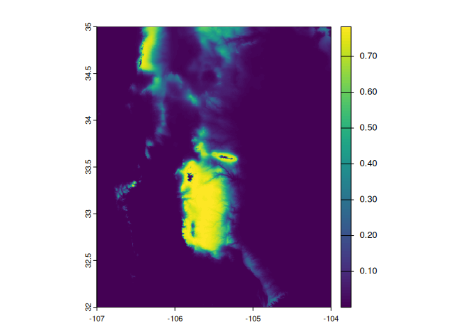

xsdm: A demographic approach to species distribution model
Installation
xsdm relies on cmdstanr package. Please install first this package tha is not in cran with the following code:
install.packages("cmdstanr", repos = c('https://stan-dev.r-universe.dev', getOption("repos")))Following this you need to install cmdstan
cmdstanr::install_cmdstan()After this, you can install the development version of xsdm from GitHub with:
remotes::install_github("alrobles/xsdm")Quick Start
We provide here a basic example to get a species distribution model (SDM) using xsdm.
First step
The first step is to create a list with the raster stack of environmental time series of variables. These example rasters are packaged for distribution with the xsdm package. We use the terra::rast function to convert a data frame in a time series raster.
library(xsdm)
#> Package 'xsdm' version 0.2.1
#> Type 'citation("xsdm")' for citing this R package in publications.
#>
#> This package depends on cmdstanr that is not in CRAN
library(terra)
#> terra 1.8.54
bio1 <- xsdm::bio1_df
bio1 <- terra::rast(bio1)These correspond to a 30-year time series of the bioclimatic variables bio1 (average annual temperature) and bio12 (cumulative annual precipitation) obtained from the project CHELSA (Climatologies at high resolution for the earth’s land surface areas) that we get from https://chelsa-climate.org/.
Second step
We create a list of this time series. In this first example we use one variables but is possible to use 2, 3 or more variables. This is depending on the model. But the computation time increase with the number of parameters the model fits. We recomend to name the elements of the list with the environmental variable name
envData <- list(bio1 = bio1)Third step
The next step is to set a data.frame with presence points of a species of interest you want to model.
occ <- xsdm::mus_virtualisIn this example we provide a virtual species. Later we will show how to create these virtual species. The structure of the data.frame should be a table with 4 columns with the following structure:
- name: The name of the taxon to model
- longitude: longitude in decimals
- latitude: latitude in decimals
- presence: Presence or absence value
Disclaimer: We provided limited documentation in how to download and clean data, however the main focus of xsdm is the modeling of species distribution. From the design philosophy of the package, it is the user’s responsibility to provide correct input data.
Fourth step
Get our very own first model is pretty straight foward using the function xsdm:
model <- xsdm(envData, occ)
#> Running MCMC with 4 sequential chains...
#>
#> Chain 1 Iteration: 1 / 2000 [ 0%] (Warmup)
#> Chain 1 Iteration: 100 / 2000 [ 5%] (Warmup)
#> Chain 1 Iteration: 200 / 2000 [ 10%] (Warmup)
#> Chain 1 Iteration: 300 / 2000 [ 15%] (Warmup)
#> Chain 1 Iteration: 400 / 2000 [ 20%] (Warmup)
#> Chain 1 Iteration: 500 / 2000 [ 25%] (Warmup)
#> Chain 1 Iteration: 600 / 2000 [ 30%] (Warmup)
#> Chain 1 Iteration: 700 / 2000 [ 35%] (Warmup)
#> Chain 1 Iteration: 800 / 2000 [ 40%] (Warmup)
#> Chain 1 Iteration: 900 / 2000 [ 45%] (Warmup)
#> Chain 1 Iteration: 1000 / 2000 [ 50%] (Warmup)
#> Chain 1 Iteration: 1001 / 2000 [ 50%] (Sampling)
#> Chain 1 Iteration: 1100 / 2000 [ 55%] (Sampling)
#> Chain 1 Iteration: 1200 / 2000 [ 60%] (Sampling)
#> Chain 1 Iteration: 1300 / 2000 [ 65%] (Sampling)
#> Chain 1 Iteration: 1400 / 2000 [ 70%] (Sampling)
#> Chain 1 Iteration: 1500 / 2000 [ 75%] (Sampling)
#> Chain 1 Iteration: 1600 / 2000 [ 80%] (Sampling)
#> Chain 1 Iteration: 1700 / 2000 [ 85%] (Sampling)
#> Chain 1 Iteration: 1800 / 2000 [ 90%] (Sampling)
#> Chain 1 Iteration: 1900 / 2000 [ 95%] (Sampling)
#> Chain 1 Iteration: 2000 / 2000 [100%] (Sampling)
#> Chain 1 finished in 5.5 seconds.
#> Chain 2 Iteration: 1 / 2000 [ 0%] (Warmup)
#> Chain 2 Iteration: 100 / 2000 [ 5%] (Warmup)
#> Chain 2 Iteration: 200 / 2000 [ 10%] (Warmup)
#> Chain 2 Iteration: 300 / 2000 [ 15%] (Warmup)
#> Chain 2 Iteration: 400 / 2000 [ 20%] (Warmup)
#> Chain 2 Iteration: 500 / 2000 [ 25%] (Warmup)
#> Chain 2 Iteration: 600 / 2000 [ 30%] (Warmup)
#> Chain 2 Iteration: 700 / 2000 [ 35%] (Warmup)
#> Chain 2 Iteration: 800 / 2000 [ 40%] (Warmup)
#> Chain 2 Iteration: 900 / 2000 [ 45%] (Warmup)
#> Chain 2 Iteration: 1000 / 2000 [ 50%] (Warmup)
#> Chain 2 Iteration: 1001 / 2000 [ 50%] (Sampling)
#> Chain 2 Iteration: 1100 / 2000 [ 55%] (Sampling)
#> Chain 2 Iteration: 1200 / 2000 [ 60%] (Sampling)
#> Chain 2 Iteration: 1300 / 2000 [ 65%] (Sampling)
#> Chain 2 Iteration: 1400 / 2000 [ 70%] (Sampling)
#> Chain 2 Iteration: 1500 / 2000 [ 75%] (Sampling)
#> Chain 2 Iteration: 1600 / 2000 [ 80%] (Sampling)
#> Chain 2 Iteration: 1700 / 2000 [ 85%] (Sampling)
#> Chain 2 Iteration: 1800 / 2000 [ 90%] (Sampling)
#> Chain 2 Iteration: 1900 / 2000 [ 95%] (Sampling)
#> Chain 2 Iteration: 2000 / 2000 [100%] (Sampling)
#> Chain 2 finished in 5.9 seconds.
#> Chain 3 Iteration: 1 / 2000 [ 0%] (Warmup)
#> Chain 3 Iteration: 100 / 2000 [ 5%] (Warmup)
#> Chain 3 Iteration: 200 / 2000 [ 10%] (Warmup)
#> Chain 3 Iteration: 300 / 2000 [ 15%] (Warmup)
#> Chain 3 Iteration: 400 / 2000 [ 20%] (Warmup)
#> Chain 3 Iteration: 500 / 2000 [ 25%] (Warmup)
#> Chain 3 Iteration: 600 / 2000 [ 30%] (Warmup)
#> Chain 3 Iteration: 700 / 2000 [ 35%] (Warmup)
#> Chain 3 Iteration: 800 / 2000 [ 40%] (Warmup)
#> Chain 3 Iteration: 900 / 2000 [ 45%] (Warmup)
#> Chain 3 Iteration: 1000 / 2000 [ 50%] (Warmup)
#> Chain 3 Iteration: 1001 / 2000 [ 50%] (Sampling)
#> Chain 3 Iteration: 1100 / 2000 [ 55%] (Sampling)
#> Chain 3 Iteration: 1200 / 2000 [ 60%] (Sampling)
#> Chain 3 Iteration: 1300 / 2000 [ 65%] (Sampling)
#> Chain 3 Iteration: 1400 / 2000 [ 70%] (Sampling)
#> Chain 3 Iteration: 1500 / 2000 [ 75%] (Sampling)
#> Chain 3 Iteration: 1600 / 2000 [ 80%] (Sampling)
#> Chain 3 Iteration: 1700 / 2000 [ 85%] (Sampling)
#> Chain 3 Iteration: 1800 / 2000 [ 90%] (Sampling)
#> Chain 3 Iteration: 1900 / 2000 [ 95%] (Sampling)
#> Chain 3 Iteration: 2000 / 2000 [100%] (Sampling)
#> Chain 3 finished in 7.4 seconds.
#> Chain 4 Iteration: 1 / 2000 [ 0%] (Warmup)
#> Chain 4 Iteration: 100 / 2000 [ 5%] (Warmup)
#> Chain 4 Iteration: 200 / 2000 [ 10%] (Warmup)
#> Chain 4 Iteration: 300 / 2000 [ 15%] (Warmup)
#> Chain 4 Iteration: 400 / 2000 [ 20%] (Warmup)
#> Chain 4 Iteration: 500 / 2000 [ 25%] (Warmup)
#> Chain 4 Iteration: 600 / 2000 [ 30%] (Warmup)
#> Chain 4 Iteration: 700 / 2000 [ 35%] (Warmup)
#> Chain 4 Iteration: 800 / 2000 [ 40%] (Warmup)
#> Chain 4 Iteration: 900 / 2000 [ 45%] (Warmup)
#> Chain 4 Iteration: 1000 / 2000 [ 50%] (Warmup)
#> Chain 4 Iteration: 1001 / 2000 [ 50%] (Sampling)
#> Chain 4 Iteration: 1100 / 2000 [ 55%] (Sampling)
#> Chain 4 Iteration: 1200 / 2000 [ 60%] (Sampling)
#> Chain 4 Iteration: 1300 / 2000 [ 65%] (Sampling)
#> Chain 4 Iteration: 1400 / 2000 [ 70%] (Sampling)
#> Chain 4 Iteration: 1500 / 2000 [ 75%] (Sampling)
#> Chain 4 Iteration: 1600 / 2000 [ 80%] (Sampling)
#> Chain 4 Iteration: 1700 / 2000 [ 85%] (Sampling)
#> Chain 4 Iteration: 1800 / 2000 [ 90%] (Sampling)
#> Chain 4 Iteration: 1900 / 2000 [ 95%] (Sampling)
#> Chain 4 Iteration: 2000 / 2000 [100%] (Sampling)
#> Chain 4 finished in 5.5 seconds.
#>
#> All 4 chains finished successfully.
#> Mean chain execution time: 6.1 seconds.
#> Total execution time: 24.6 seconds.
#> Warning: 139 of 4000 (3.0%) transitions ended with a divergence.
#> See https://mc-stan.org/misc/warnings for details.In the design of xsdm we simplify the use with a main xsdm function. Innerlly this function controls the model flow.
What is xsdm
xsdm integrates concepts of stochastic demography into species distribution modelling. Inferences, utilizing Bayesian methods based in ‘Stan’, are made of aspects of the environmental niche of a species, and those inferences can be used to project species geographic range. See Berti et al. (2024, doi:10.1101/2024.10.30.621023) for a description of the statistical and demographic models used.
Virtual species
In order to follow with more examples we provide an auxiliary data package with examples to show the xsdm funcionalities.
install.packages("xsdmexamples", repos="https://alrobles.github.io/drat/")Then we create a raster list with two environmental variables. This example is centered in a small portion of South New Mexico with 1 km^2 of spatial resolution.
library(xsdmexamples)
library(terra)
bio1 <- terra::rast(bio1_df_NM)
bio12 <- terra::rast(bio12_df_NM)
envData <- list(bio1 = bio1, bio12 = bio12)We are going to create a virtual species with the function vsp.
library(xsdm)
virt_rast <- vsp(env_data = envData,
param.list = list(mu = c(8, 700),
sigl = c(1, 100),
sigr = c(2, 50),
c = -5,
pd = 0.8,
L = matrix(c(1,0,0,1), ncol = 2) ))
Then we are going to create a random sample of points from this virtual species
df_presence <- terra::spatSample(virt_rast, 1000, na.rm = TRUE, xy = TRUE)
#> Warning: [is.lonlat] assuming lon/lat crs
names(df_presence) <- c("longitude", "latitude", "probs")
df_presence$presence <- rbinom(nrow(df_presence),
size = 1,
prob = df_presence$probs)Let’s run a model to test that xsdm can retrieve the parameters we created the virtual species with.
model <- xsdm(envData, df_presence,
recompile = TRUE,
max_treedepth = 10,
adapt_delta = 0.8,
nchains = 4,
parallel_chains = 4,
threads_per_chain = 5,
iter_warmup = 500,
iter_sampling = 500,
refresh = 10)